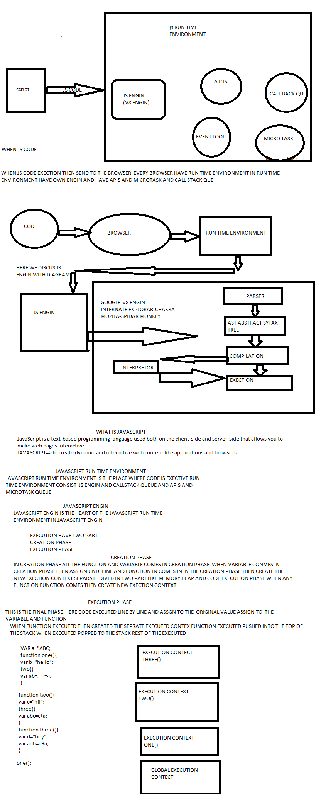
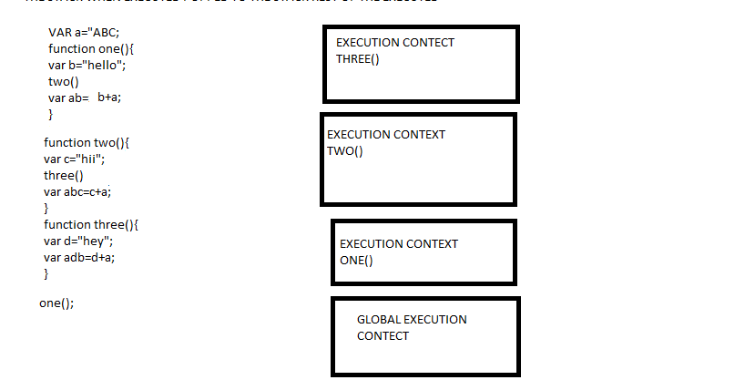

JavaScript is a text-based programming language used both on the client-side and server-side that allows you to make web pages interactive.
to create dynamic and intrective web content like application
JavaScript run time environment here code get executed evevy browser have own runtime environment and every run time envieonment have own engin the engin is the heart of the run time envronment
javascript run time environment is the place where our code get executed and every run time environment have own engin and call stake queue microtask queue apis
javascript engin have many thing like parser ast, (abstract syantax tree),compilation,execution
execution have two part
in creation phase all the variable and function comes in the creation phase and variable comes in creation phase memory assign the variable undefine and any function comes then create seprate execution context and divided in two part memory heap and execution phase
this is the final phase here assign variable original value and here also code executed line by line
when function executed create the seprate executed context pussed into the top of the stake when executed popped in to the stack rest of executed
